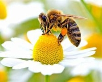
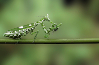

Relação ecologicas
Relações ecológicas são as interações que ocorrem entre os seres vivos. Essas relações podem ocorrer entre indivíduos de uma mesma espécie ou de espécies diferentes e podem ser classificadas como harmônicas e desarmônicas, dependendo das consequências que elas trazem aos envolvidos. A seguir apresentamos as relações ecológicas e as formas como elas podem ser classificadas.
Relações harmônicas: quando traz benefícios a todos os envolvidos, ou traz benefício a um, mas sem causar prejuízo ao outro organismo envolvido na relação; é também conhecida como positiva.
Relações desarmônicas: quando causa algum prejuízo para algum dos envolvidos; é também conhecida como negativa.
-
Colônia🐝🍯
Nesse tipo de relação, os indivíduos de uma mesma espécie vivem juntos, no entanto, podem apresentar ou não divisão de trabalho. Tal tipo traz benefícios a todos os envolvidos, sendo classificado também como relação harmônica. São exemplos caravelas (há divisão de trabalho) e colônia de bactérias (não há divisão de trabalho).
 -
Competição🦁
Nesse tipo de relação, os indivíduos de uma mesma espécies podem entrar em disputa por recursos que são limitados, como alimento, território e parceria para reprodução. A competição é uma relação desarmônica. Um exemplo dessa relação é a competição por território, que acontece entre alguns animais, por exemplo, aves. Uma forma que as aves utilizam para delimitar seu território é por meio do canto. Com este, elas sinalizam aos demais que aquele território está ocupado.
-
Canibalismo🦗
Nesse tipo de relação, um indivíduo alimenta-se de outro da mesma espécie, assim, trata-se de uma relação desarmônica. O canibalismo ocorre, por exemplo, entre filhotes de tubarões de algumas espécies, como o tubarão-cinza, enquanto ainda estão no útero.
 -
Mutualismo🌻🐝
Nesse tipo de relação, indivíduos de espécies diferentes vivem associados, sendo dependentes ou não dessa associação. Nela os dois são beneficiados, sendo assim uma relação harmônica. Um exemplo de mutualismo obrigatório é a associação de algumas espécies de algas ou cianobactérias e fungos, formando líquens. As algas ou cianobactérias fazem fotossíntese e fornecem aos fungos a matéria orgânica produzida que servirá a eles como alimento. Já os fungos retêm água e sais minerais, além de conferirem certa proteção às algas.
Um exemplo onde essa associação não é obrigatória ocorre entre o caranguejo-paguro e a anêmonas. Aquele vive dentro de conchas vazias, em que algumas destas fixam-se. Com o deslocamento do caranguejo, a área de alimentação da anêmona que vive fixa aumenta. Já esta confere proteção àquele afastando predadores, devido à presença de substâncias urticantes em seus tentáculos. Essa relação é também conhecida como protocooperação.
-
Comensalismo🌿🐠

Nesse tipo de relação, apenas uma das espécies é beneficiada, no entanto, não causa prejuízo à outra. Essa relação é classificada como harmônica. Um exemplo de comensalismo ocorre entre o tubarão e a rêmora. Esta se fixa na superfície ventral daquele por meio de ventosas e assim é transportada (tal relação é também conhecida como inquilinismo), além de utilizar-se de restos alimentares do tubarão para sua alimentação.
Um outro exemplo de comensalismo é a relação entre algumas plantas epífitas, como orquídeas e bromélias, que vivem sobre o tronco de plantas maiores em florestas, utilizando-as apenas como suporte em busca de uma maior disponibilidade de luz. Essa relação é também conhecida como epifitismo.
-
Amensalismo🌾🦗🐘
Nesse tipo de relação, um indivíduo secreta substâncias que inibem ou impedem o desenvolvimento de outro. Essa é uma relação desarmônica, pois é prejudicial a um dos envolvidos. Um exemplo de amensalismo ocorre com alguns fungos que secretam substâncias que causam a morte de bactérias.
-
Parasitismo🌳🍄
Nesse tipo de relação, um dos indivíduos (parasita) retira do organismo de outro (hospedeiro) nutrientes para sua sobrevivência. Tal relação pode debilitar o indivíduo hospedeiro e até mesmo levá-lo à óbito. Trata-se de uma relação desarmônica. Um exemplo de parasitismo ocorre entre o ser humano (hospedeiro) e alguns vermes, como a lombriga (parasita).
-
Predação🦁🦓
Nesse tipo de relação, um indivíduo mata o de outra espécie para alimentar-se. Essa relação é classificada como desarmônica, já que apenas um indivíduo é beneficiado. Um exemplo de predação pode ser observado em leões que se alimentam de animais como a zebra.
-
Competição🌾🌱
Nesse tipo de relação, os indivíduos de espécies diferentes podem entrar em disputa por recursos que são limitados, como alimento ou território. A competição é uma relação desarmônica. Um exemplo é a competição entre plantas de espécies diferentes, em uma floresta densa, pela disponibilidade luminosa.

| Classificações das relações ecológicas | Relações infraescíficas harmônicas | Relações intraespecíficas desarmônicas | Relações interespecíficas harmônicas | Relações interespecíficas desarmônicas |
|---|---|---|---|---|
| Tipos de relações ecológicas | h | n |